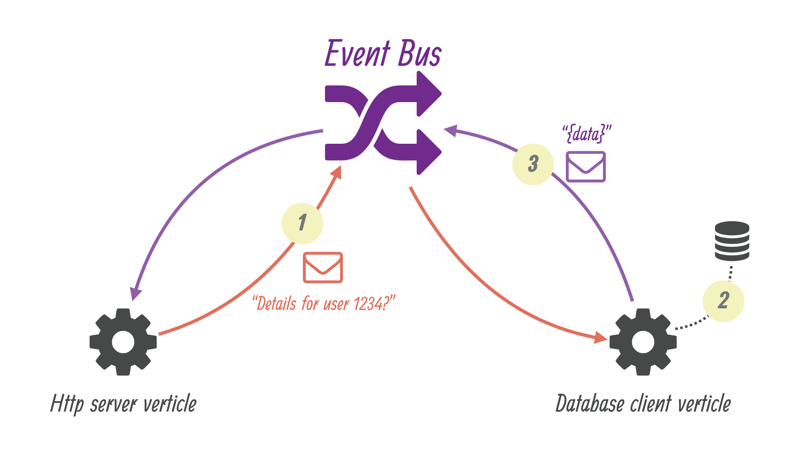

Introduction to Eclipse Vert.x
Lin Gao <lgao@redhat.com>
Middleware Runtime SET
Middleware Runtime SET
Agenda
-
What is Eclipse Vert.x
-
Demos
-
Vert.x Ecosystem
What is Eclipse Vert.X?
" Eclipse Vert.x is a tool-kit for building reactive applications on the JVM."
Reactive Applications

Polyglot
"You can use Vert.x with multiple languages including Java, JavaScript, Groovy, Ruby, Ceylon, Scala and Kotlin."
On JVM
Reactor

Multi-Reactor

What does Vert.x Application look like?
JAVA
Server.java:
import io.vertx.core.AbstractVerticle;
public class Server extends AbstractVerticle {
public void start() {
vertx.createHttpServer().requestHandler(req -> {
req.response()
.putHeader("content-type", "text/plain")
.end("Hello from Vert.x! " + Thread.currentThread());
}).listen(8080);
}
}docker run -i -t --rm -p 8080:8080 -v $PWD:/verticles docker.io/aoingl/vert3-exec-jdk run /verticles/Server.javaJAVASCRIPT
server.js:
vertx.createHttpServer()
.requestHandler(function (req) {
req.response()
.putHeader("content-type", "text/plain")
.end("Hello from Vert.x!");
}).listen(8080);docker run -i -t --rm -p 8080:8080 -v $PWD:/verticles docker.io/vertx/vertx3-exec run /verticles/server.jsVert.x Core
Vertx vertx = Vertx.vertx();
VertxOptions options = new VertxOptions()
.setEventLoopPoolSize(10)
.setEventBusOptions(new EventBusOptions()
.setClusterPublicHost("10.0.0.4")
.setClusterPublicPort(9999));
Vertx vertx = Vertx.clusteredVertx(options);Vert.x Verticle
vertx.deployVerticle(String name,
Handler<AsyncResult<String>> completionHandler);- Block of codes that get deployed and run by Vert.x
- Verticles have a simple start / stop life-cycle
- 2 types of Verticles:
- Standard Verticle
- Worker Verticle
- Single-threaded
- Communicate with each other via EventBus
Event Bus
EventBus eventBus = vertx.eventBus();- The Nervous system of Vert.x
- Register handlers for any address
- Send or publish messages to any address
- Types of messages:
- Primitive Types / Buffer
- JsonObject / JsonArray
- Any type with codecs registered
Event Bus
EventBus eventBus = vertx.eventBus();- Message Delivery:
- Point-to-Point:
eventBus.send(String address, Object message) - Request / Response:
eventBus.request(String address, Object message, Handler<AsyncResult<Message<T>>> replyHandler); - Publish / Subscribe:
eventBus.publish(String address, Object message); - Best-effort delivery
Typical Vert.x Web application
